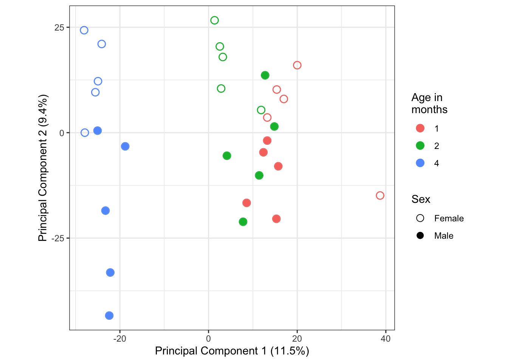
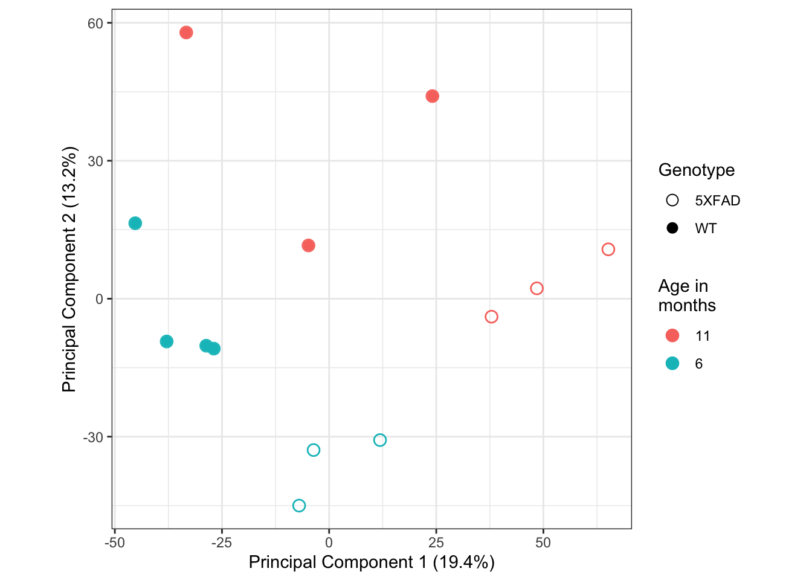
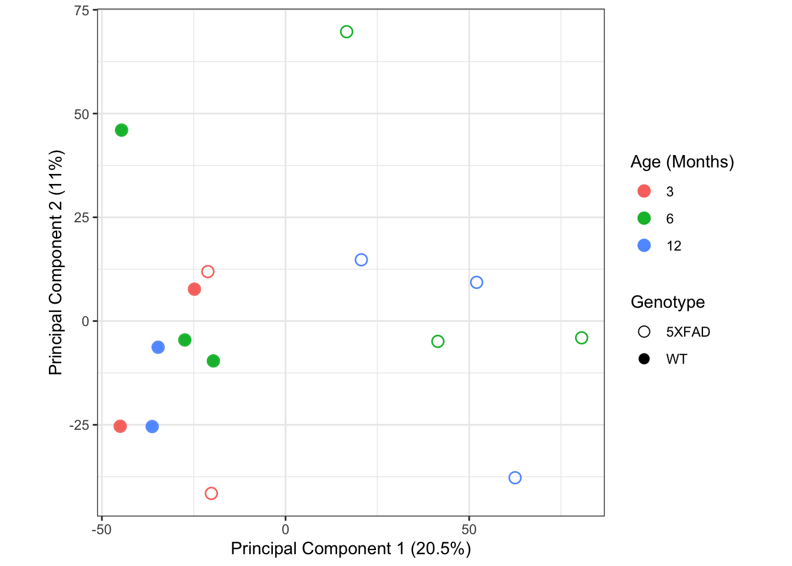

Last updated: 2020-05-06
Checks: 6 1
Knit directory: mousevsfish/
This reproducible R Markdown analysis was created with workflowr (version 1.6.1). The Checks tab describes the reproducibility checks that were applied when the results were created. The Past versions tab lists the development history.
The R Markdown is untracked by Git. To know which version of the R Markdown file created these results, you’ll want to first commit it to the Git repo. If you’re still working on the analysis, you can ignore this warning. When you’re finished, you can run wflow_publish to commit the R Markdown file and build the HTML.
Great job! The global environment was empty. Objects defined in the global environment can affect the analysis in your R Markdown file in unknown ways. For reproduciblity it’s best to always run the code in an empty environment.
The command set.seed(20200504) was run prior to running the code in the R Markdown file. Setting a seed ensures that any results that rely on randomness, e.g. subsampling or permutations, are reproducible.
Great job! Recording the operating system, R version, and package versions is critical for reproducibility.
Nice! There were no cached chunks for this analysis, so you can be confident that you successfully produced the results during this run.
Great job! Using relative paths to the files within your workflowr project makes it easier to run your code on other machines.
Great! You are using Git for version control. Tracking code development and connecting the code version to the results is critical for reproducibility.
The results in this page were generated with repository version 744a3be. See the Past versions tab to see a history of the changes made to the R Markdown and HTML files.
Note that you need to be careful to ensure that all relevant files for the analysis have been committed to Git prior to generating the results (you can use wflow_publish or wflow_git_commit). workflowr only checks the R Markdown file, but you know if there are other scripts or data files that it depends on. Below is the status of the Git repository when the results were generated:
Ignored files:
Ignored: .Rproj.user/
Ignored: data/.DS_Store
Ignored: data/de/
Ignored: data/enrichment/
Untracked files:
Untracked: analysis/import-data.Rmd
Untracked: data/datasets/
Untracked: notes.docx
Untracked: ~$notes.docx
Note that any generated files, e.g. HTML, png, CSS, etc., are not included in this status report because it is ok for generated content to have uncommitted changes.
There are no past versions. Publish this analysis with wflow_publish() to start tracking its development.
geo <- getGEO("GSE115437", GSEMatrix = TRUE)
geo$GSE115437_series_matrix.txt.gz@phenoData %>% pData %>% as_tibbleThey don’t have WT controls in this dataset, although it’s the only one I could find that includes these earlier age groups which are likely to be more comparable to our zebrafish.
Will try seeing where they lie on a PCA with other 5XFAD datasets to see if it’s possible to combine them or generally how comparable they are.
Platform: Illumina HiSeq 2500
# Retrieve the sample metadata from GEO
geo <- getGEO("GSE97113", GSEMatrix = TRUE)Found 1 file(s)GSE97113_series_matrix.txt.gzParsed with column specification:
cols(
.default = col_character()
)See spec(...) for full column specifications.File stored at: /var/folders/mf/j7h9p8l55k9fb0rgm_f753cc0000gn/T//RtmpzchMFb/GPL17021.softsamples <- geo$GSE97113_series_matrix.txt.gz@phenoData %>%
pData %>%
as_tibble %>%
dplyr::select(title, description,
geo_accession,
starts_with("characteristics")) %>%
dplyr::rename(genotype = characteristics_ch1,
id = description,
sex = characteristics_ch1.1,
age = characteristics_ch1.2,
tissue = characteristics_ch1.3) %>%
dplyr::mutate(genotype = "5XFAD" %>% as.factor,
sex = gsub(x=sex, pattern="Sex: ", replacement = "") %>%
as.factor,
age = gsub(x=age, pattern="age: | Month", replacement = "") %>%
as.factor,
tissue = "Hippocampus" %>% as.factor,
title = gsub(x=title,pattern=" ", replacement="_"))
# Downloaded counts from GEO
counts <- read_csv(here("data/datasets/mouse/GSE97113_5XFAD_counts.csv"))Parsed with column specification:
cols(
.default = col_double(),
Gene.ID = col_character(),
Associated.Gene.Name = col_character(),
Description = col_character()
)See spec(...) for full column specifications.genes <- counts %>% dplyr::select(Gene.ID, Associated.Gene.Name, Description)
counts <- counts %>% as.data.frame %>% column_to_rownames("Gene.ID") %>%
dplyr::select(-Associated.Gene.Name, -Description)
colnames(counts)==samples$id # Check ordering of samples is the same [1] TRUE TRUE TRUE TRUE TRUE TRUE TRUE TRUE TRUE TRUE TRUE TRUE TRUE TRUE TRUE
[16] TRUE TRUE TRUE TRUE TRUE TRUE TRUE TRUE TRUE TRUE TRUE TRUE TRUE TRUE TRUE# Set the sample names in counts matrix to readable name
colnames(counts)=samples$titledge_GSE97113 <- DGEList(counts=counts,
samples = samples,
genes = genes, remove.zeros = TRUE)Removing 11810 rows with all zero countspca <- prcomp(t(cpm(dge_GSE97113, log = TRUE)))
shape_factor <- paste0(samples$sex, "_", samples$age, "_mths") %>%
factor(levels = unique(.))
pca_plot_GSE97113 <- pca$x %>% magrittr::extract(, c("PC1", "PC2")) %>%
set_colnames(c("PCa", "PCb")) %>%
as.data.frame %>%
rownames_to_column("samples") %>%
left_join((dge_GSE97113$samples %>% rownames_to_column("samples")), by="samples") %>%
ggplot(aes(x=PCa, y = PCb, shape = sex, colour = age)) +
geom_point(shape = 1,size = 3.3)+
geom_point(alpha = 1,size=3) +
scale_shape_manual(values = c(1,16)) +
#scale_shape_manual(values = c(0,15,1,16,2,17),
# labels = levels(shape_factor)) +
labs(x = "Principal Component 1 (11.5%)",
y = "Principal Component 2 (9.4%)",
colour = "Age in\nmonths",
shape = "Sex") +
theme(aspect.ratio = 1)
pca_plot_GSE97113
Overall there is not a huge difference (PC1 only accounts for 11.5% variation). However, the 4-month-olds separate out from the 1-2 month olds. This makes sense as they are quite a bit older. There is also some noticeable separation across PC2 of the male and female samples.
Dataset looks good, I will re-process the raw data for this one.
split -l 1 ena download --additional-suffix=.txt
count=1; for file in *.txt; do mv $file ${count}_${file}; count=$(expr $count + 1); donesplit: ena: No such file or directory
mv: rename *.txt to 1_*.txt: No such file or directorycounts <- read_tsv(here("data/datasets",
"/mouse/GSE142633_RAW_transcripts.txt")) %>%
set_colnames(gsub(x=colnames(.), pattern ="_.*$", replacement = ""))Parsed with column specification:
cols(
GSM4233218_WT_806_6M_FC.txt = col_double(),
GSM4233219_WT_807_6M_FC.txt = col_double(),
GSM4233220_WT_817_6M_FC.txt = col_double(),
GSM4233221_WT_819_6M_FC.txt = col_double(),
GSM4233222_TG_967_6M_FC.txt = col_double(),
GSM4233223_TG_968_6M_FC.txt = col_double(),
GSM4233224_TG_970_6M_FC.txt = col_double(),
GSM4233225_WT_178_11M_FC.txt = col_double(),
GSM4233226_WT_772_11M_FC.txt = col_double(),
GSM4233227_WT_774_11M_FC.txt = col_double(),
GSM4233228_TG_180_11M_FC.txt = col_double(),
GSM4233229_TG_183_11M_FC.txt = col_double(),
GSM4233230_TG_795_11M_FC.txt = col_double()
)genes <- read_tsv(here("data/datasets/mouse",
"GSM4233218_WT_806_6M_FC.genes.results.txt")) %>%
dplyr::select(gene_id, `transcript_id(s)`)Parsed with column specification:
cols(
gene_id = col_character(),
`transcript_id(s)` = col_character(),
length = col_double(),
effective_length = col_double(),
expected_count = col_double(),
TPM = col_double(),
FPKM = col_double()
)geo <- getGEO("GSE142633", GSEMatrix = TRUE)Found 1 file(s)GSE142633_series_matrix.txt.gzParsed with column specification:
cols(
ID_REF = col_character(),
GSM4233218 = col_character(),
GSM4233219 = col_character(),
GSM4233220 = col_character(),
GSM4233221 = col_character(),
GSM4233222 = col_character(),
GSM4233223 = col_character(),
GSM4233224 = col_character(),
GSM4233225 = col_character(),
GSM4233226 = col_character(),
GSM4233227 = col_character(),
GSM4233228 = col_character(),
GSM4233229 = col_character(),
GSM4233230 = col_character()
)File stored at: /var/folders/mf/j7h9p8l55k9fb0rgm_f753cc0000gn/T//RtmpzchMFb/GPL24247.softsamples <- geo$GSE142633_series_matrix.txt.gz@phenoData %>%
pData %>%
as_tibble %>%
dplyr::select(title, description,
geo_accession,
starts_with("characteristics")) %>%
dplyr::rename(genotype = characteristics_ch1,
tissue = characteristics_ch1.1,
age = characteristics_ch1.2) %>%
dplyr::mutate(genotype = gsub(x=genotype, pattern="strain: ",
replacement = "") %>% as.factor,
genotype = gsub(x=genotype, pattern="B6SJLF1/J",
replacement = "WT"),
tissue = gsub(x=tissue, pattern="tissue: | of brain",
replacement = "") %>%
as.factor,
age = gsub(x=age, pattern="age: | months", replacement = "") %>%
as.factor,
title = gsub(x=title,pattern=" mRNAseq", replacement=""),
rep = c(1:4, 1:3, 1:3, 1:3),
description = paste(genotype, age, rep, sep="_"))
colnames(counts)==samples$geo_accession # All TRUE [1] TRUE TRUE TRUE TRUE TRUE TRUE TRUE TRUE TRUE TRUE TRUE TRUE TRUEcolnames(counts) <- samples$description
counts %<>% as.data.frame %>% set_rownames(genes$gene_id)dge_GSE142633 <- DGEList(counts=counts,
samples = samples,
genes = genes, remove.zeros = TRUE)Removing 24698 rows with all zero countspca <- prcomp(t(cpm(dge_GSE142633, log = TRUE)))
shape_factor <- paste0(samples$genotype, "_", samples$age, "_mths") %>%
factor(levels = unique(.))
pca_plot_GSE142633 <- pca$x %>% magrittr::extract(, c("PC1", "PC2")) %>%
set_colnames(c("PCa", "PCb")) %>%
as.data.frame %>%
rownames_to_column("samples") %>%
left_join((dge_GSE142633$samples %>% rownames_to_column("samples")), by="samples") %>%
ggplot(aes(x=PCa, y = PCb, shape = genotype, colour = as.factor(age))) +
geom_point(shape = 1,size = 3.3)+
geom_point(alpha = 1,size=3) +
scale_shape_manual(values = c(1,16)) +
#scale_shape_manual(values = c(0,15,1,16,2,17),
# labels = levels(shape_factor)) +
labs(x = "Principal Component 1 (19.4%)",
y = "Principal Component 2 (13.2%)",
colour = "Age in\nmonths",
shape = "Genotype") +
theme(aspect.ratio = 1)
pca_plot_GSE142633
samples <- getGEO(filename = here::here("data", "datasets", "mouse",
"GSE140286_series_matrix.txt"),
getGPL = FALSE) %>%
phenoData %>%
pData %>%
as_tibbleParsed with column specification:
cols(
ID_REF = col_character(),
GSM4158886 = col_character(),
GSM4158887 = col_character(),
GSM4158888 = col_character(),
GSM4158889 = col_character(),
GSM4158890 = col_character(),
GSM4158891 = col_character(),
GSM4158892 = col_character(),
GSM4158893 = col_character(),
GSM4158894 = col_character(),
GSM4158895 = col_character(),
GSM4158896 = col_character(),
GSM4158897 = col_character(),
GSM4158898 = col_character(),
GSM4158899 = col_character(),
GSM4158900 = col_character()
)samples %<>% dplyr::select(description.1,
title,
starts_with("age"),
starts_with("genotype"),
starts_with("tissue"),
contains("Sample_characteristics_ch1")) %>%
dplyr::rename(id = description.1,
name = title,
age = `age:ch1`,
genotype = `genotype:ch1`,
tissue = `tissue:ch1`) %>%
dplyr::mutate(age = gsub(x = age,
pattern = " months",
replacement = ""),
age = as.numeric(age)) %>%
dplyr::mutate(genotype = gsub(x = name,
pattern = "_(.)*$",
replacement = ""),
genotype = factor(genotype,
levels = c("5XFAD","WT")))
samples# A tibble: 15 x 5
id name age genotype tissue
<fct> <fct> <dbl> <fct> <chr>
1 SJMMALZ058765_G1 WT_3mo_1 3 WT Cortex
2 SJMMALZ058766_G1 WT_3mo_2 3 WT Cortex
3 SJMMALZ058768_G1 5XFAD_3mo_1 3 5XFAD Cortex
4 SJMMALZ058769_G1 5XFAD_3mo_2 3 5XFAD Cortex
5 SJMMALZ058771_G1 WT_6mo_1 6 WT Cortex
6 SJMMALZ058772_G1 WT_6mo_2 6 WT Cortex
7 SJMMALZ058773_G1 WT_6mo_3 6 WT Cortex
8 SJMMALZ058774_G1 5XFAD_6mo_1 6 5XFAD Cortex
9 SJMMALZ058775_G1 5XFAD_6mo_2 6 5XFAD Cortex
10 SJMMALZ058776_G1 5XFAD_6mo_3 6 5XFAD Cortex
11 SJMMALZ058778_G1 WT_12mo_2 12 WT Cortex
12 SJMMALZ058782_G1 WT_12mo_3 12 WT Cortex
13 SJMMALZ058780_G1 5XFAD_12mo_1 12 5XFAD Cortex
14 SJMMALZ058781_G1 5XFAD_12mo_2 12 5XFAD Cortex
15 SJMMALZ058779_G1 5XFAD_12mo_3 12 5XFAD Cortexcounts <- here("data", "datasets", "mouse",
"GSE140286_FAD_time_series_rnaseq_raw_count.txt") %>%
read_tsvParsed with column specification:
cols(
Gene = col_character(),
SJMMALZ058765_G1 = col_double(),
SJMMALZ058766_G1 = col_double(),
SJMMALZ058768_G1 = col_double(),
SJMMALZ058769_G1 = col_double(),
SJMMALZ058771_G1 = col_double(),
SJMMALZ058772_G1 = col_double(),
SJMMALZ058773_G1 = col_double(),
SJMMALZ058774_G1 = col_double(),
SJMMALZ058775_G1 = col_double(),
SJMMALZ058776_G1 = col_double(),
SJMMALZ058778_G1 = col_double(),
SJMMALZ058779_G1 = col_double(),
SJMMALZ058780_G1 = col_double(),
SJMMALZ058781_G1 = col_double(),
SJMMALZ058782_G1 = col_double()
)counts# A tibble: 37,991 x 16
Gene SJMMALZ058765_G1 SJMMALZ058766_G1 SJMMALZ058768_G1 SJMMALZ058769_G1
<chr> <dbl> <dbl> <dbl> <dbl>
1 ENSM… 23145 23668 27445 24838
2 ENSM… 0 0 0 1
3 ENSM… 0 3 2 3
4 ENSM… 6664 6084 8344 8552
5 ENSM… 3 4 6 6
6 ENSM… 73 11 63 24
7 ENSM… 17525 18604 20293 22173
8 ENSM… 1417 1840 1610 2683
9 ENSM… 20938 20240 22835 26377
10 ENSM… 899 1282 1276 1702
# … with 37,981 more rows, and 11 more variables: SJMMALZ058771_G1 <dbl>,
# SJMMALZ058772_G1 <dbl>, SJMMALZ058773_G1 <dbl>, SJMMALZ058774_G1 <dbl>,
# SJMMALZ058775_G1 <dbl>, SJMMALZ058776_G1 <dbl>, SJMMALZ058778_G1 <dbl>,
# SJMMALZ058779_G1 <dbl>, SJMMALZ058780_G1 <dbl>, SJMMALZ058781_G1 <dbl>,
# SJMMALZ058782_G1 <dbl>sampleNames <- counts[,-c(1)] %>% colnames
sampleNames [1] "SJMMALZ058765_G1" "SJMMALZ058766_G1" "SJMMALZ058768_G1" "SJMMALZ058769_G1"
[5] "SJMMALZ058771_G1" "SJMMALZ058772_G1" "SJMMALZ058773_G1" "SJMMALZ058774_G1"
[9] "SJMMALZ058775_G1" "SJMMALZ058776_G1" "SJMMALZ058778_G1" "SJMMALZ058779_G1"
[13] "SJMMALZ058780_G1" "SJMMALZ058781_G1" "SJMMALZ058782_G1"samples corresponds to the sampleNames.samples$id %in% sampleNames # Are all samples in sample table present in counts samples? [1] TRUE TRUE TRUE TRUE TRUE TRUE TRUE TRUE TRUE TRUE TRUE TRUE TRUE TRUE TRUEsamples$id == sampleNames # Is the order the same? [1] TRUE TRUE TRUE TRUE TRUE TRUE TRUE TRUE TRUE TRUE TRUE FALSE
[13] TRUE TRUE FALSEsamples so that they match the order of sampleNames from the counts matrix.samples <- samples %>%
as.data.frame %>%
set_rownames(.$id) %>%
magrittr::extract(sampleNames, )samples id name age genotype tissue
SJMMALZ058765_G1 SJMMALZ058765_G1 WT_3mo_1 3 WT Cortex
SJMMALZ058766_G1 SJMMALZ058766_G1 WT_3mo_2 3 WT Cortex
SJMMALZ058768_G1 SJMMALZ058768_G1 5XFAD_3mo_1 3 5XFAD Cortex
SJMMALZ058769_G1 SJMMALZ058769_G1 5XFAD_3mo_2 3 5XFAD Cortex
SJMMALZ058771_G1 SJMMALZ058771_G1 WT_6mo_1 6 WT Cortex
SJMMALZ058772_G1 SJMMALZ058772_G1 WT_6mo_2 6 WT Cortex
SJMMALZ058773_G1 SJMMALZ058773_G1 WT_6mo_3 6 WT Cortex
SJMMALZ058774_G1 SJMMALZ058774_G1 5XFAD_6mo_1 6 5XFAD Cortex
SJMMALZ058775_G1 SJMMALZ058775_G1 5XFAD_6mo_2 6 5XFAD Cortex
SJMMALZ058776_G1 SJMMALZ058776_G1 5XFAD_6mo_3 6 5XFAD Cortex
SJMMALZ058778_G1 SJMMALZ058778_G1 WT_12mo_2 12 WT Cortex
SJMMALZ058779_G1 SJMMALZ058779_G1 5XFAD_12mo_3 12 5XFAD Cortex
SJMMALZ058780_G1 SJMMALZ058780_G1 5XFAD_12mo_1 12 5XFAD Cortex
SJMMALZ058781_G1 SJMMALZ058781_G1 5XFAD_12mo_2 12 5XFAD Cortex
SJMMALZ058782_G1 SJMMALZ058782_G1 WT_12mo_3 12 WT Cortexsamples$id == sampleNames # Confirm order matches now [1] TRUE TRUE TRUE TRUE TRUE TRUE TRUE TRUE TRUE TRUE TRUE TRUE TRUE TRUE TRUEgenes <- data.frame(ensembl_gene_id = counts$Gene)counts %<>% column_to_rownames("Gene")colnames(counts) <- samples$namedge_GSE140286 <- DGEList(
counts = counts,
genes = genes,
samples = samples,
remove.zeros = TRUE
)Removing 8336 rows with all zero countspca <- prcomp(t(cpm(dge_GSE140286, log = TRUE)))
shape_factor <- paste0(samples$genotype, "_", samples$age) %>%
factor(levels = unique(.))
pca_plot_GSE140286 <- pca$x %>% magrittr::extract(, c("PC1", "PC2")) %>%
set_colnames(c("PCa", "PCb")) %>%
as.data.frame %>%
rownames_to_column("samples") %>%
left_join((dge_GSE140286$samples %>% rownames_to_column("samples")), by="samples") %>%
ggplot(aes(x=PCa, y = PCb, shape = genotype, colour = as.factor(age))) +
geom_point(shape = 1,size = 3.3)+
geom_point(alpha = 1,size=3) +
scale_shape_manual(values = c(1,16)) +
#scale_shape_manual(values = c(0,15,1,16,2,17),
# labels = levels(shape_factor)) +
labs(x = "Principal Component 1 (20.5%)",
y = "Principal Component 2 (11%)",
colour = "Age (Months)",
shape = "Genotype") +
theme(aspect.ratio = 1)
pca_plot_GSE140286
In contrast to the other datasets above, the main source of variation in the data is not age but genotype.
Overall separation is decent, and I will re-process the data.
dge_GSE97113 %>% saveRDS(here("data/datasets/mouse/dge_GSE97113.rds"))
pca_plot_GSE97113 %>% export::graph2pdf(here("data/datasets/mouse/pca_plot_GSE97113"))dge_GSE142633 %>% saveRDS(here("data/datasets/mouse/dge_GSE142633.rds"))
pca_plot_GSE142633 %>% export::graph2pdf(here("data/datasets/mouse/pca_plot_GSE142633"))dge_GSE140286 %>% saveRDS(here("data/datasets/mouse/dge_GSE140286.rds"))
pca_plot_GSE140286 %>% export::graph2pdf(here("data/datasets/mouse/pca_plot_GSE140286"))
sessionInfo()R version 3.5.2 (2018-12-20)
Platform: x86_64-apple-darwin15.6.0 (64-bit)
Running under: macOS Mojave 10.14.6
Matrix products: default
BLAS: /Library/Frameworks/R.framework/Versions/3.5/Resources/lib/libRblas.0.dylib
LAPACK: /Library/Frameworks/R.framework/Versions/3.5/Resources/lib/libRlapack.dylib
locale:
[1] en_AU.UTF-8/en_AU.UTF-8/en_AU.UTF-8/C/en_AU.UTF-8/en_AU.UTF-8
attached base packages:
[1] parallel stats graphics grDevices utils datasets methods
[8] base
other attached packages:
[1] ggplot2_3.2.1 UpSetR_1.4.0 edgeR_3.24.3
[4] limma_3.38.3 dplyr_0.8.3 readr_1.3.1
[7] tibble_2.1.3 GEOquery_2.50.5 Biobase_2.42.0
[10] BiocGenerics_0.28.0 magrittr_1.5 here_0.1
loaded via a namespace (and not attached):
[1] tidyselect_0.2.5 locfit_1.5-9.1 xfun_0.11 purrr_0.3.3
[5] lattice_0.20-38 colorspace_1.4-1 vctrs_0.2.0 htmltools_0.4.0
[9] yaml_2.2.0 utf8_1.1.4 rlang_0.4.1 later_1.0.0
[13] pillar_1.4.2 glue_1.3.1 withr_2.1.2 lifecycle_0.1.0
[17] plyr_1.8.4 stringr_1.4.0 munsell_0.5.0 gtable_0.3.0
[21] workflowr_1.6.1 evaluate_0.14 labeling_0.3 knitr_1.26
[25] httpuv_1.5.2 curl_4.2 fansi_0.4.0 Rcpp_1.0.3
[29] promises_1.1.0 backports_1.1.5 scales_1.0.0 fs_1.3.1
[33] gridExtra_2.3 hms_0.5.2 digest_0.6.22 stringi_1.4.3
[37] rprojroot_1.3-2 grid_3.5.2 cli_1.1.0 tools_3.5.2
[41] lazyeval_0.2.2 crayon_1.3.4 tidyr_1.0.0 pkgconfig_2.0.3
[45] zeallot_0.1.0 ellipsis_0.3.0 xml2_1.2.2 assertthat_0.2.1
[49] rmarkdown_1.17 R6_2.4.1 git2r_0.26.1 compiler_3.5.2